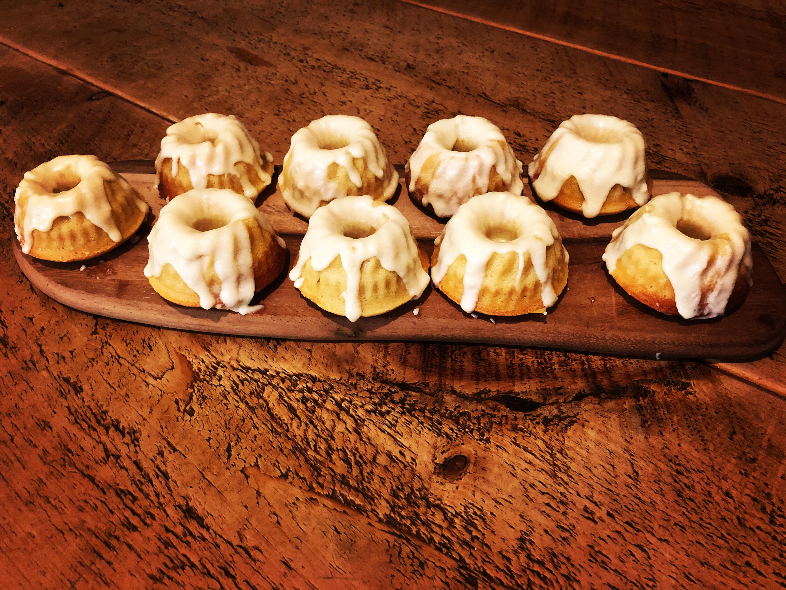

Sweet Rolls

"Absurd that you can't get good sweetrolls
in this skeeverhole of a city..." -Dagny
Sweetrolls, sometimes spelled as sweet rolls,
are a tasty confectionary food. They are pastries
with a light brown sweetbread as the lower
part, with icing covering the top. Sweetrolls
are typically made from milk, flour, butter,
eggs, and salt, but we added sugar to this version
so as to make it more palatable.
Ingredients
Cake
- 1/2 tsp salt
- Jug of milk
- Sack of flour
- 3/4 cup granulated sugar
- Stick of butter
- Chicken's egg
Glaze
- 2 cups confectioners sugar
- 2-4 tbsp water or milk
- Vanilla extract
Instructions
- Heat oven until fire is hot
- Mix dry ingredients in a large bowl
- Cream butter and sugar together
- Mix in dry ingredients
- Add in egg and milk and mix until combined
- Form dough into small mounds and place on baking sheet
- Bake 12-15 minutes or until golden-brown
- Let cool for 5-10 minutes before drizzling glaze on
For glaze
In a bowl, whisk together sifted powdered sugar, vanilla extract,
and enough liquid to thin the glaze to your desired consistency.